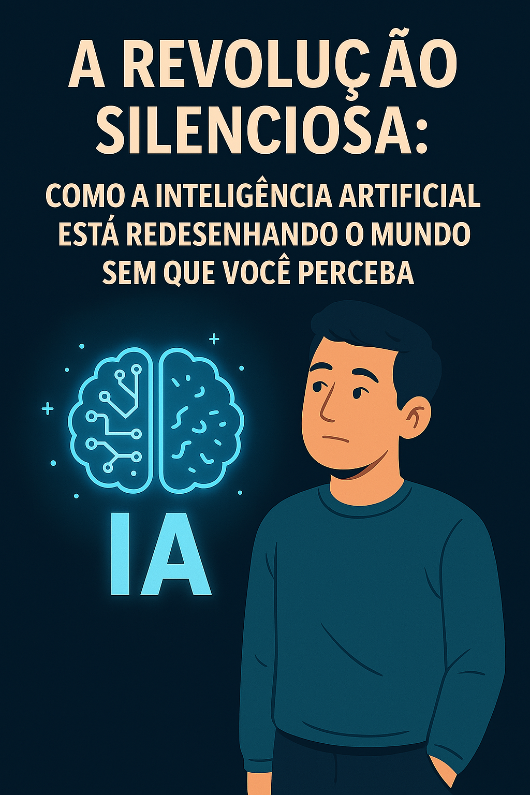

📝 Postagens Pessoais
Este é o espaço onde compartilho ideias, experiências e reflexões sobre a revolução da Inteligência Artificial. Aqui, a tecnologia encontra o coração humano.

Não Tenha Medo da Inteligência Artificial
A tecnologia que assusta também pode libertar. Descubra como a IA pode se tornar uma aliada poderosa para quem ensina e para quem aprende.
Leia mais

5 motivos para começar a usar IA agora mesmo
Descubra por que a Inteligência Artificial pode ser sua maior aliada no trabalho, nos estudos e no dia a dia.
Leia mais
Como criei meu site com ajuda da IA
Um relato real de superação, aprendizado e inspiração para quem acha que não pode começar com tecnologia.
Leia mais